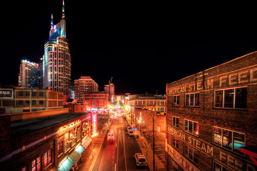

Nashville was founded by James Robertson, John Donelson, and a party of Wataugans in 1779, and was originally called Fort Nashborough, after the American Revolutionary War hero Francis Nash.
By 1860, when the first rumblings of secession began to be heard across the South, antebellum Nashville was a very prosperous city.
The city’s significance as a shipping port made it a desirable prize as a means of controlling important river and railroad transportation routes. In February 1862, Nashville became the first state capital to fall to Union troops.